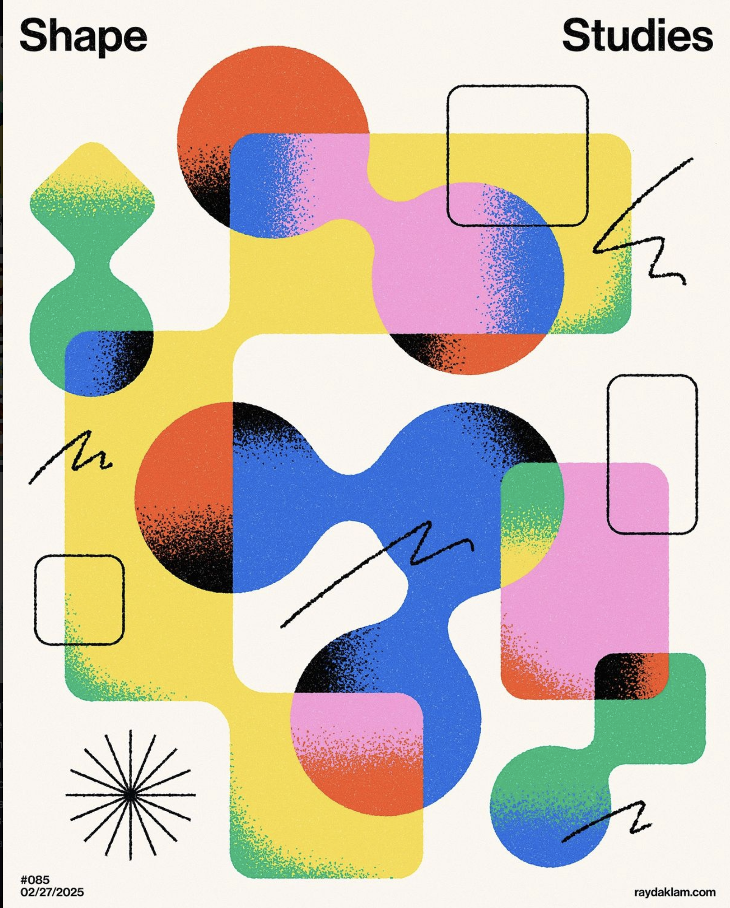
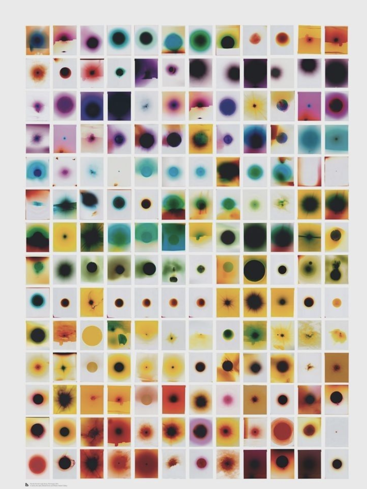
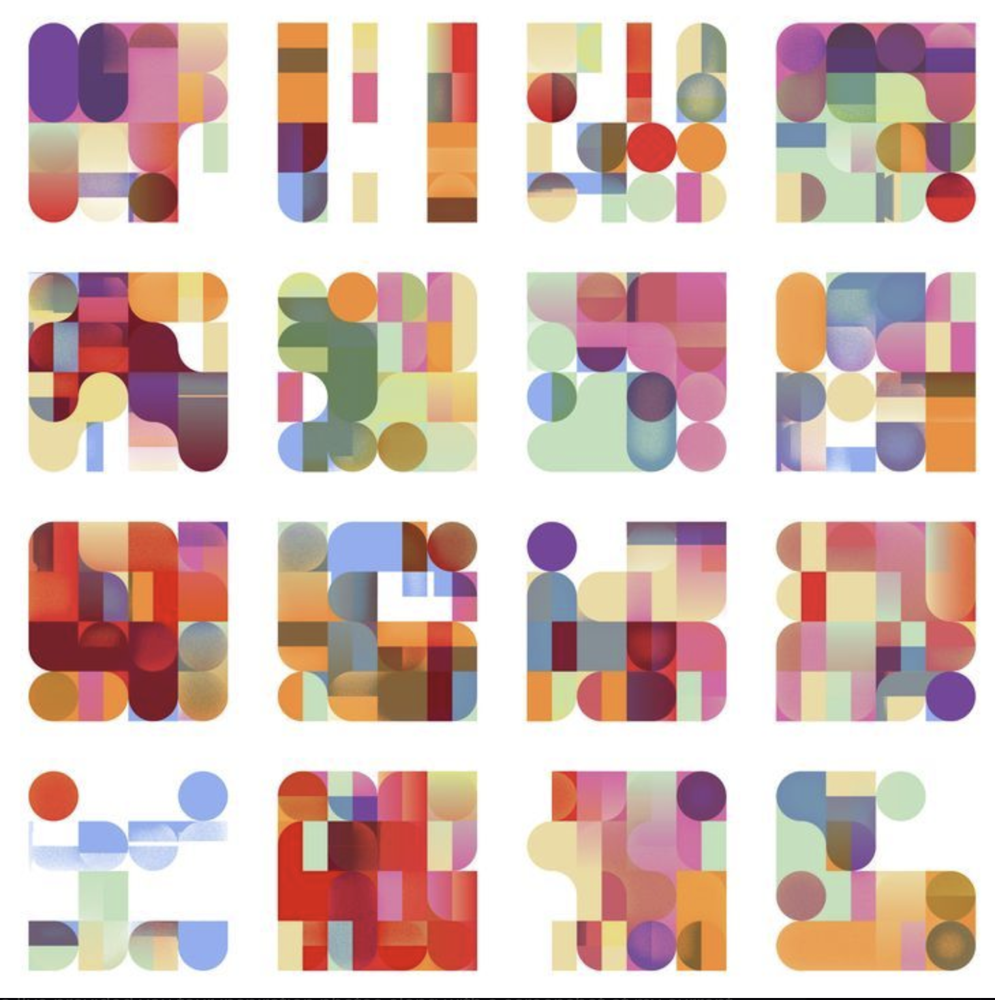
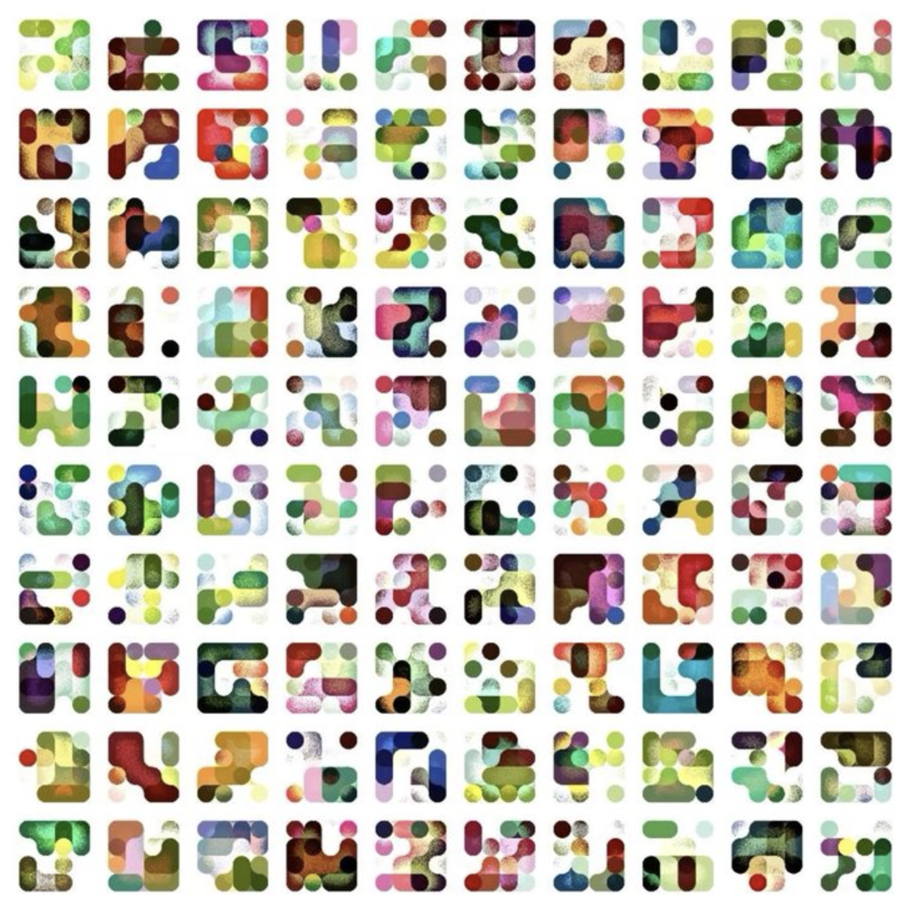

The user's own layout, colors, clusters, and long-distance ties are the composition.
Eido research 04
Activity language / board portraits
The board becomes the mark.
A research direction for turning Eido activity into recognizable visual artifacts: seeded, tactile, proud, and shaped by the user's own board geography.
Not a tracker The artifact should feel like a journal print, not a productivity demand.
Not generic art Every major mark should trace back to board position, color, connection, or event history.
Not rerolled Procedural variation is welcome only when it is deterministic and locked.
Principles
The new direction keeps the useful parts of Rhythm but moves the center of gravity from calendar completion to spatial recognition.
A mark can be strange or varied as long as the user can still find their own places inside it.
Quiet periods are paper texture. Active periods are visible trace. Nothing becomes a broken streak.
Texture, jitter, and shape variants come from fixed seeds and stable board events.
References
The inspiration is playful modular modernism, but the source of truth is still the Eido board itself.

Bold overprint, capsules, grain, and annotation marks.

Many related glyphs with individual generated character.

Tile studies with local palettes and controlled negative space.

A study-sheet family: repetition without sameness.

The actual board geography: regions, colors, density, and memory.
Grammar
Early primitives. They should remain accountable to graph events, but flexible enough for bolder visual language.
Capture
New thoughts appear as dots, capsules, or seeds placed where they entered the board.
Connect
Ties become chords, bridges, or ribbons between actual board positions.
Shape
Groups, edits, and reorganized areas become translucent blocks, hulls, and contours.
Revisit
Older material brought back into focus earns halos, echoes, and denser overprint.
Working generator recipe
{
"source": "board graph + intent log",
"window": "period, session, or day",
"spatialModel": "normalized board geography",
"palette": "user board colors + action notation",
"variation": "seeded jitter, texture, curvature",
"lock": "generator version + stable event ids"
}
The generator can make a board feel alive. It cannot invent the meaning. The meaning comes from where the user put things and how those things changed.
Recognition Test
The central test is not whether the page looks like a dashboard. The test is whether the user can recognize their own board inside the artifact.
Ask before labels appear
Can you find the dense left cluster? Can you find the long right-side lane? Can you see which islands are isolated? Can you point to the region that came back?
If the answer is yes, the system is doing Eido's work: preserving the shape of thought, not counting the typing.
Next
Use this folder as a research repo for future prototypes, critique passes, and implementation planning.